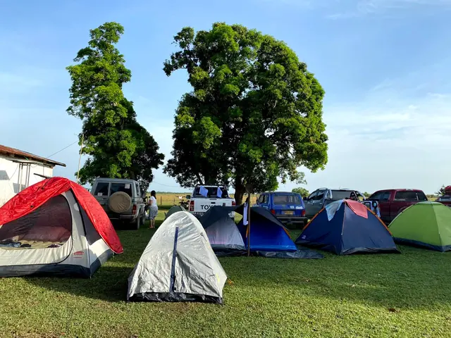
🏕️ Hospedaje
Espacios para camping y chinchorro.
San PabloReserva Natural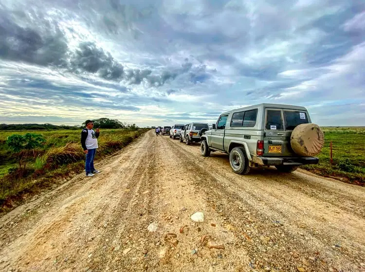
#SeformóLaSanpablera
Reserva Natural San Pablo · Paz de Ariporo, Casanare
Quiénes somos
En La Reserva San Pablo, nos enfocamos en conquistar el corazón de los turistas, invitándolos a descubrir la magia del llano casanareño. Nuestro objetivo es brindar una experiencia única y sensacional, donde los visitantes puedan sumergirse en la riqueza de nuestra región.
Ofrecemos una diversidad de flora y fauna, aventuras emocionantes, comodidad y cultura, todo ello respaldado por un equipo apasionado por el ecoturismo, la naturaleza, la historia y el folclor llanero; comprometido con brindar un servicio excepcional, garantizando que cada visitante se lleve recuerdos inolvidables de su estancia en el llano casanareño.
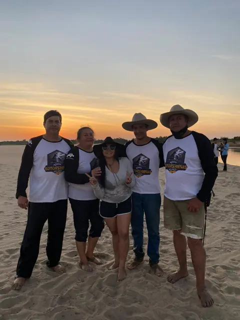
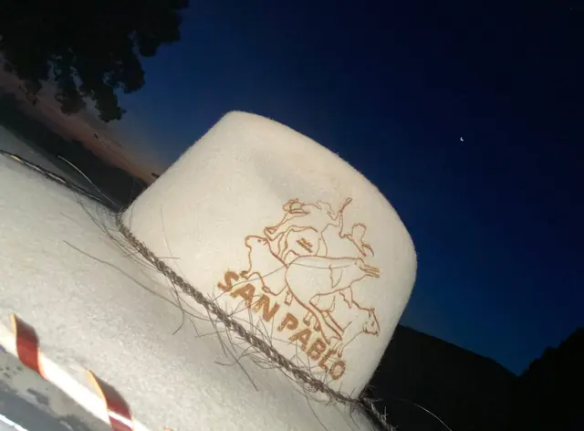
Plan 4 días y 3 noches

Espacios para camping y chinchorro.
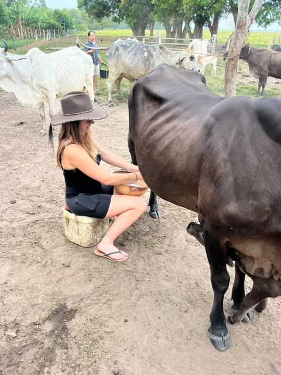
Exposición de cantos de ordeño al amanecer.
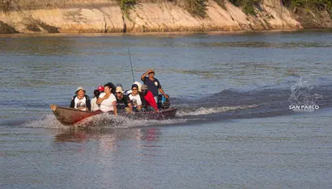
Paseo en canoa y avistamiento de toninas.
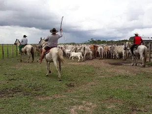
El folclor y la vida del llano casanareño.
Cantos, cachos y leyendas llaneros.
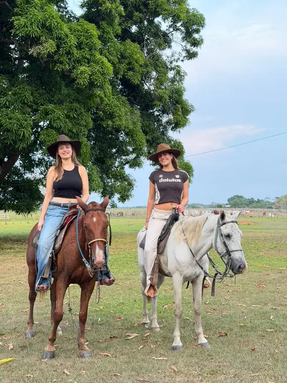
Cabalgatas y recorridos por la sabana.
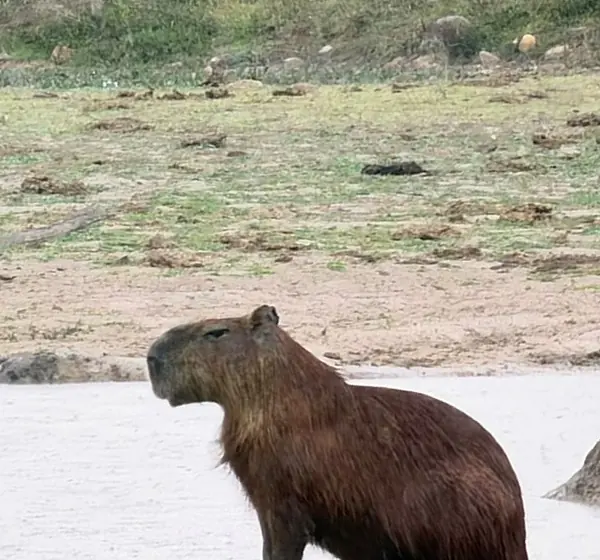
Chigüiros, aves y la fauna de los caños y lagunas.
Lugares: Laguna La Chula, Caño Pica Pico
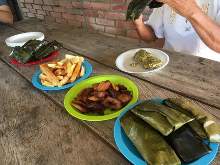
Sabores típicos de la región.
#SeformóLasanpablera
RUTA: Yopal → Paz de Ariporo → Caño Chiquito → Finca San Pablo
🕒 Nota: lo programado desde las 3:30 pm (La Chula – La Hermosa) se puede realizar el Día 1 o el Día 4, el día de salida.
* El orden de las actividades dentro de cada día puede cambiar según el clima, el estado de las vías y el ritmo del grupo.
Así se vive
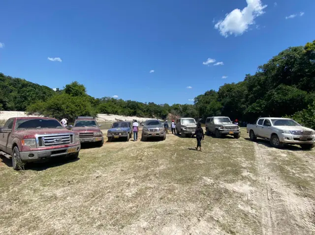
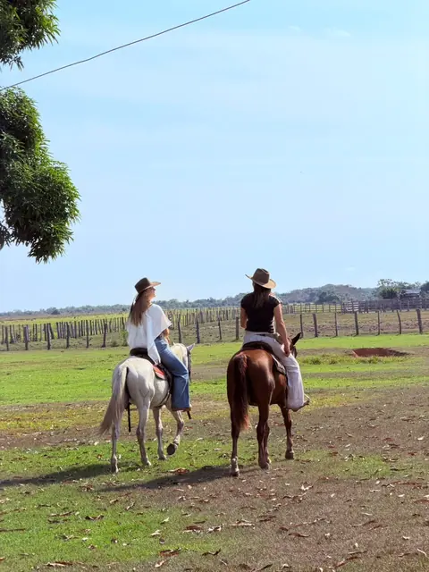
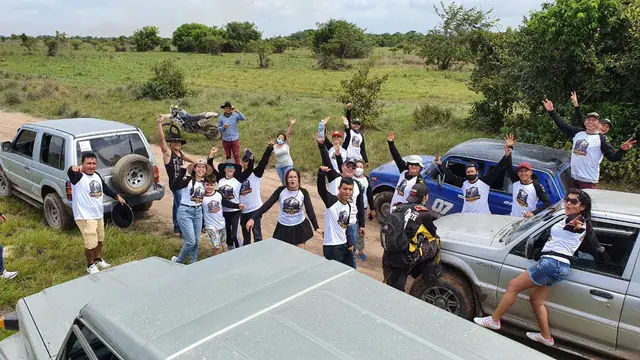
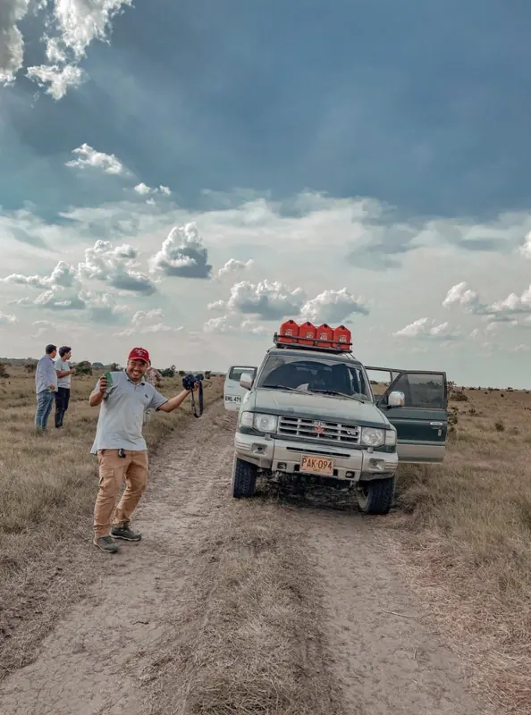
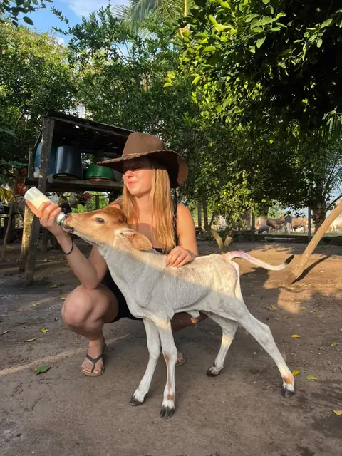
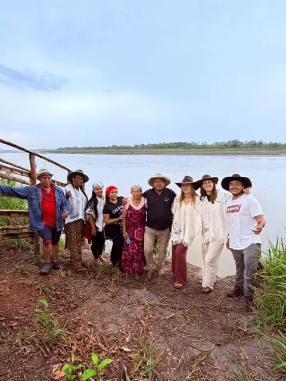
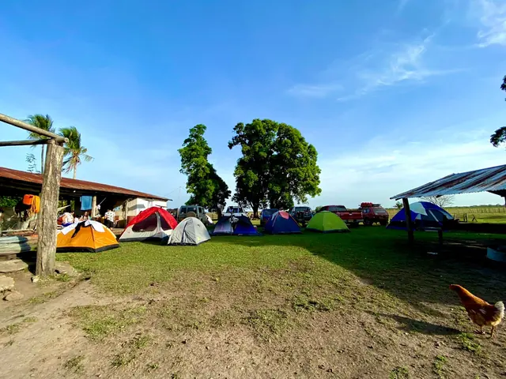
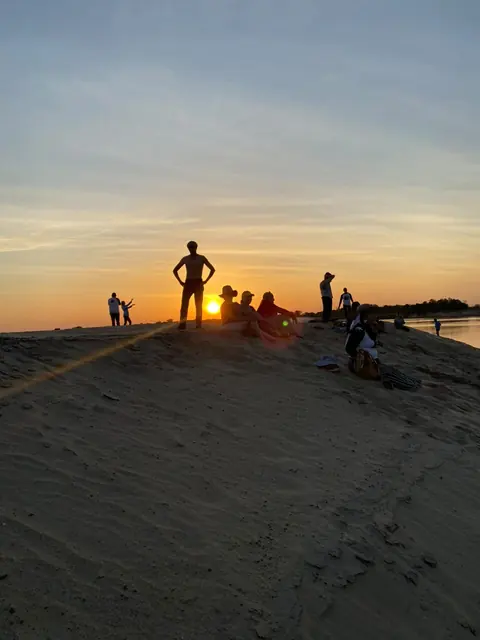
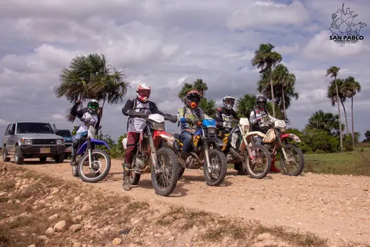
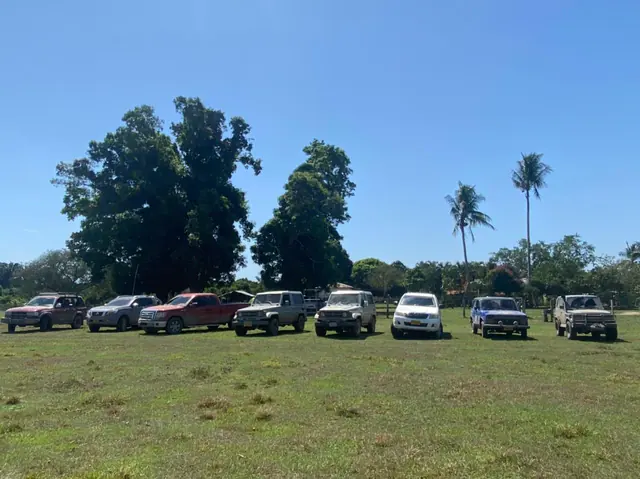
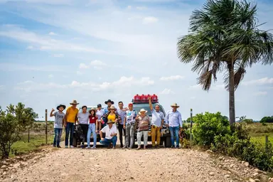
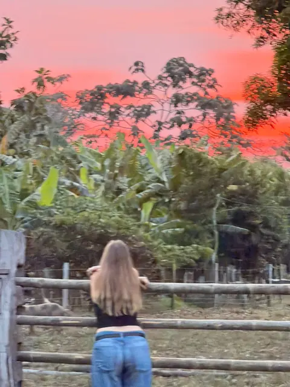
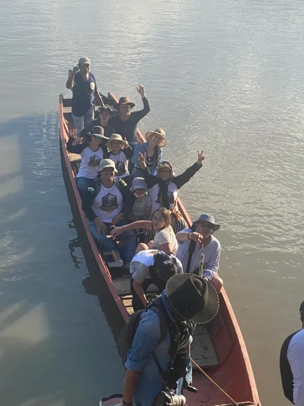
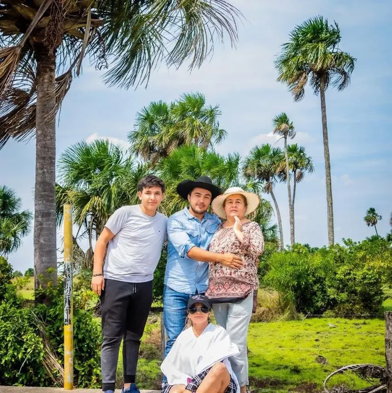
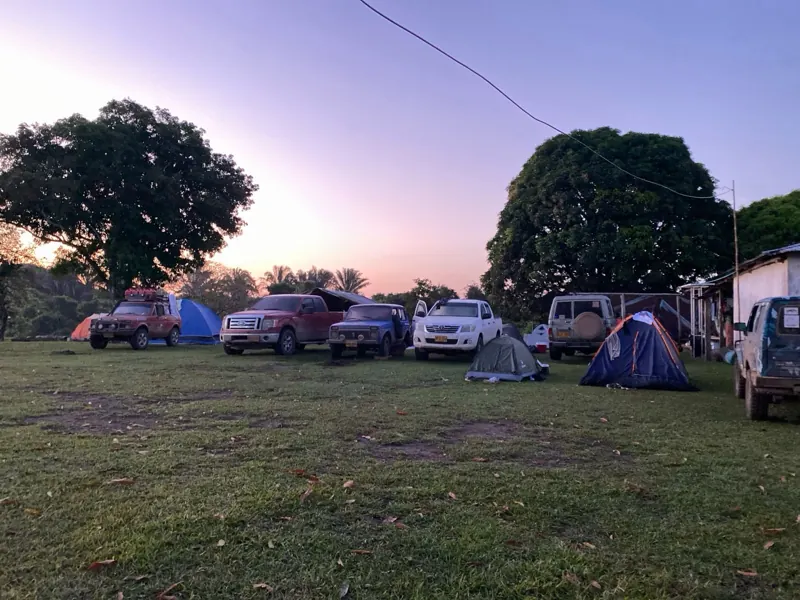
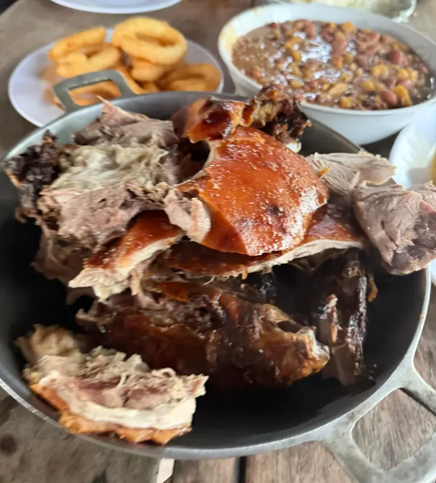
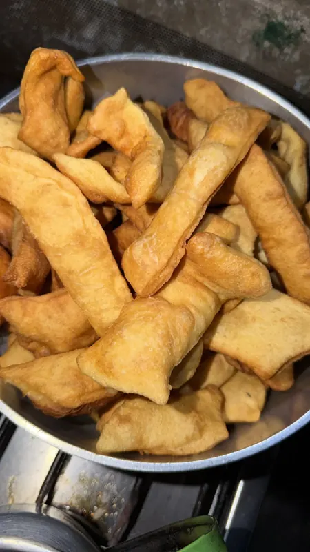
Reservas por WhatsApp
Llene el formulario y se abre WhatsApp con su mensaje listo para enviar. Le respondemos con disponibilidad y detalles del plan.